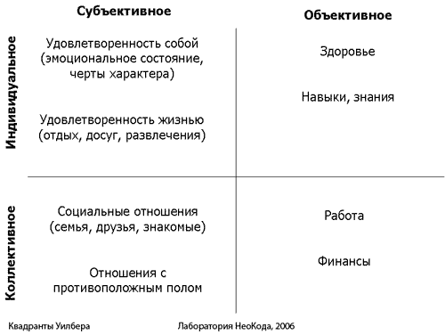

У одного купца сломался двигатель парохода, на котором он вез товар, и он пригласил лучшего мастера для его починки. Как люди приходят к идее личностного роста и саморазвития? В какой-то момент они замечают, что в некоторых ситуациях они могли бы быть значительно эффективнее, если бы не их личностные ограничения - старые паттерны (бессознательные автоматизмы), которые вызывают нежелательные состояния, запускают неподходящее поведение и т.п. И тогда становится ясно, что будь ты хоть асом коммуникации, хоть лучшим йогом, если не "отцепить эти якоря", то далеко в своем деле не продвинешься. Найти технику, с помощью которой можно избавиться от негативных паттернов и запустить позитивные изменения в определенных жизненных областях, несложно - например, Новый Код НЛП (открытый тренинг по Новому Коду НЛП и электронный самоучитель "Управление Состоянием") предлагают целый набор техник. Вопрос возникает в другом: как выявить те свои ограничения, с которыми нужно разобраться в первую очередь? Ведь большинство из них мы не помним и осознаем только тогда, когда упираемся в них лбом, идя по жизни. А ведь очень часто бывает, что достаточно внести изменения в одну - ключевую область своей жизни, чтобы вся жизнь радикально изменилась в лучшую сторону. Задавшись этим вопросом, мы с Алексеем Каптеревым решили создать инструмент, призванный помочь в обнаружении своих актуальных ограничений. В результате у нас получилась схема, с помощью которой можно просто и быстро выявить самые актуальные области своей жизни, нуждающиеся в изменениях в первую очередь - создать, так сказать, карту своего личностного развития. С ее помощью можно сразу увидеть, с чего нужно начинать. В основу этой карты легли Квадранты Уилбера, описывающие четыре составляющие жизни человека: субъективное индивидуальное, объективное индивидуальное, субъективное коллективное и объективное коллективное. А в каждом квадранте мы выделили по две соответствующие ему жизненные области, которые уже и проверяются на наличие в них ограничений. (Эти области на наш взгляд являются наиболее актуальными в нашей культуре, но, при необходимости, их, конечно же, можно дополнить.) Получился, своего рода, "чек-лист", представленный в виде изображенной на рисунке карты:  Так же эту карту можно представить и в виде простого списка: - Удовлетворенность собой (эмоциональное состояние, черты характера) Как использовать карту личностного развития: 1. Пройдитесь по всем жизненным областям, перечисленным в карте и посмотрите, насколько вы удовлетворены каждой из этих областей. Оцените каждую область по степени удовлетвореннсти от 1 до 8, ставя наибольший балл той области, которой вы удовлетворены больше, и наименьший - той, которой удовлетворены меньше. Вот и все, осталось только сделать технику :) Успехов на пути личностного роста! Егор Булыгин,
Мастер походил по моторному отсеку, послушал двигатель, посмотрел и, поняв в чем дело, взял молоток и ударил по определенному месту двигателя. Двигатель заработал как ни в чем не бывало, и обрадованный купец попросил счет. Мастер выставил счет на тысячу долларов.
"Как?" - изумился купец, - "Тысячу долларов за один удар молотком?".
"Нет," - возразил мастер, - "один доллар за удар молотком, и девятьсот девяносто девять за знание, куда ударить."
- Удовлетворенность жизнью (отдых, досуг, развлечения)
- Социальные отношения (семья, друзья, знакомые)
- Отношения с противоположным полом
- Здоровье
- Навыки, знания
- Работа (занятость)
- Финансы (доход)
2. Затем проранжируйте этот список по актуальности, используя обратную шкалу: 1 - соответствует высшей актуальности, а 8 - низшей.
3. А теперь сложите баллы удовлетворенности и актуальности по каждой жизненной области, и у вас будет отсортированный список, по которому сразу видно, с решения каких задач нужно начинать.
тренер НЛП
21.03.2006
(function() {
window._pa = window._pa || {};
// _pa.orderId = "myOrderId"; // OPTIONAL: attach unique conversion identifier to conversions
// _pa.revenue = "19.99"; // OPTIONAL: attach dynamic purchase values to conversions
// _pa.productId = "myProductId"; // OPTIONAL: Include product ID for use with dynamic ads
var pa = document.createElement('script'); pa.type = 'text/javascript'; pa.async = true;
pa.src = ('https:' == document.location.protocol ? 'https:' : 'http:') + "//tag.perfectaudience.com/serve/52fe1fb766eb2484d7000056.js";
var s = document.getElementsByTagName('script')[0]; s.parentNode.insertBefore(pa, s);
})();